需要的软件：
Jdk 1.8 或者更高的版本
Sphere_by_Horizen_Sidechain_Testnet-2.0.0-beta.exe
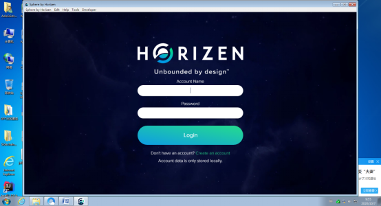
点击Create链接，创建钱包
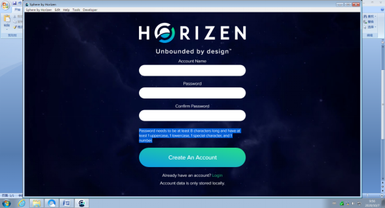
名称随意，密码需要符合提示的要求，创建成功后登录后可以参考下图设置为中文。
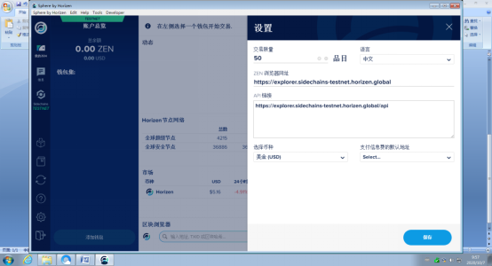
等待同步完成（目前的链大约4.2同步大概需要一天）
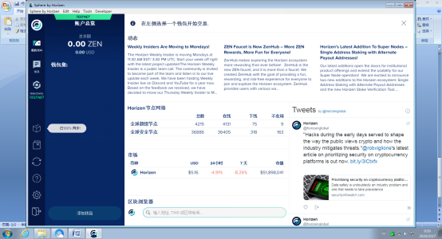
点击：添加钱包-》创建新钱包，设置钱包名称，这里有个坑：马上要点击创建的按钮，不要等那个计时器完成，然后记下生产的单词列表并验证，之后可以看到这个新地址，点击复制地址。
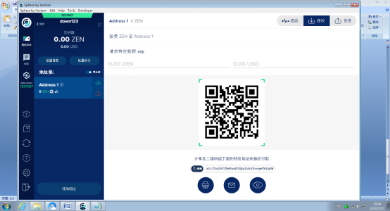
访问：https://heap.horizen.io/ 向下滑动页面到最底下。输入刚刚复制的地址点击：CLAIM.
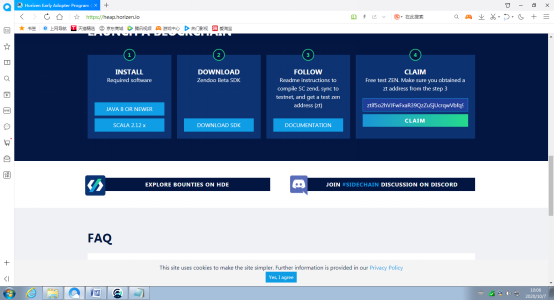
通过人机验证，并输入一下信息后，你可以得到12个测试币。
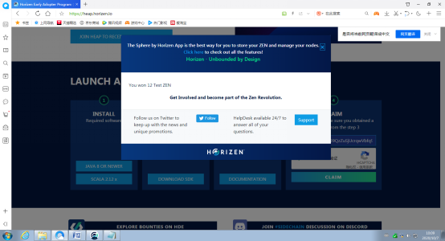
返回钱包等待几分钟后就可以看到这些测试币。
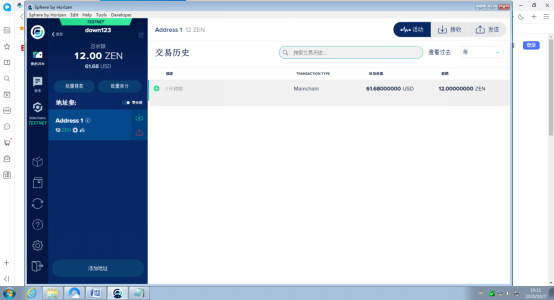
下载安装，一路next即可，然后需要把bin目录添加到系统path环境变量中。
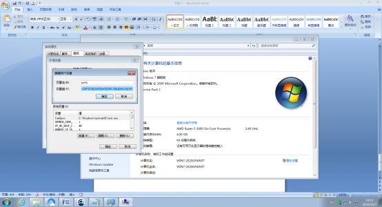
http://maven.apache.org/download.cgi
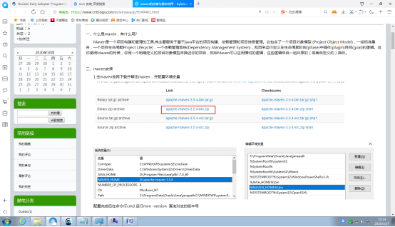
https://git-scm.com/download/win
下载后一路next。
git clone https://github.com/ZencashOfficial/Sidechains-SDK.git
下载最新的代码
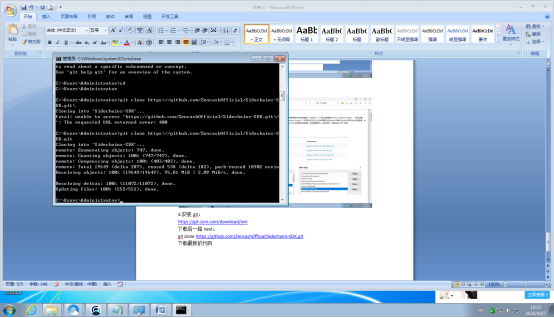
git clone https://github.com/ZencashOfficial/Sidechains-SDK.git
输入：
java –version
mvn –version
检查需要的软件是否正常。
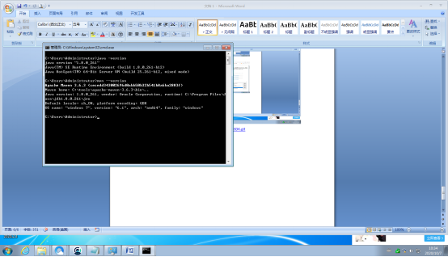
进入下载的软件目录：cd Sidechains-SDK
设置环境变量：set JAVA_HOME=C:\Program Files\Java\jdk1.8.0_261\
编译：mvn package
编译成功后出现如下界面：
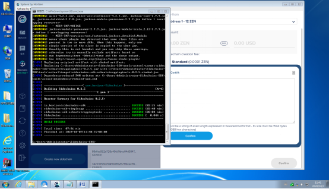
3.1生成密钥：
java -jar tools/sctool/target/sidechains-sdk-scbootstrappingtools-0.2.5.jar
注意：这个包的版本号可能会有变化，具体去文件夹看看就知道了。
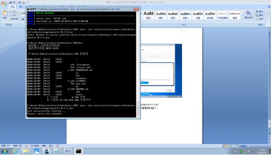
输入：
A generatekey {"seed":"BUvQVGnY5PGG99q4BHZZar5ab7B6X4AMFnKheg5B7m"}
复制系统返回的信息：
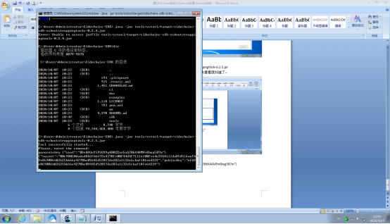
B generateVrfKey {"seed":"AEvEHXJw63JtwcauKKz3km8MfHCkGeHXuKBeH32hD5"}
复制系统返回的信息：
C generateProofInfo {"seed":"ap7zGSt79nS3BJwDY3A5JKEVNbsnxpwcPc7rEZnXL7", "keyCount":7, "threshold":5}
复制系统返回的信息：
3.1在图形界面中声明侧链
在钱包中点击：test图标，输入以下信息：
Custom name：侧链的名字，请随意；
Pay from：付款的钱包，就是刚刚创建的钱包地址；
Sidechain creation address: 上面步骤A中返回的publicKey，长度：64；
wCertVk:上面步骤C中返回的verificationKey，长度：3088；
Constant data: 上面步骤C中返回的genSysConstant长度：192;
Custom data: 上面步骤B中返回的vrfPublicKey长度：386;
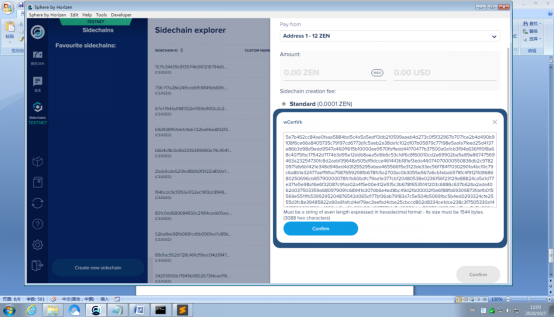
点击：con成功后界面如下：
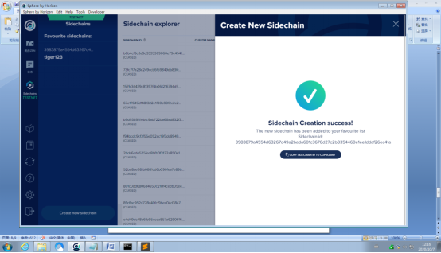
4.1主链向侧链转账：
确保已选中“侧链交易”按钮，以查看对侧链进行交易的可能性。选择您的侧链。
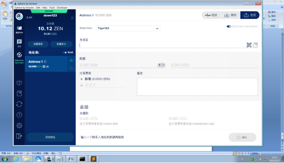
发送至：generateKey调用而获得的publicKey，输入数量点击发送。
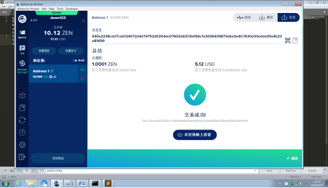
交易收到足够的确认后，我们可以看到相关数量的代币已记入侧链。
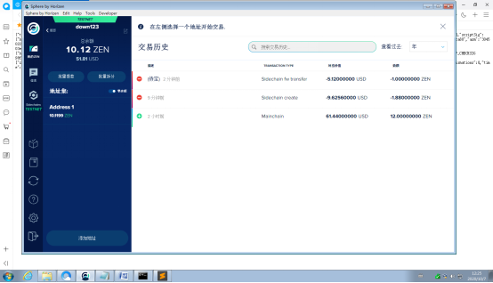